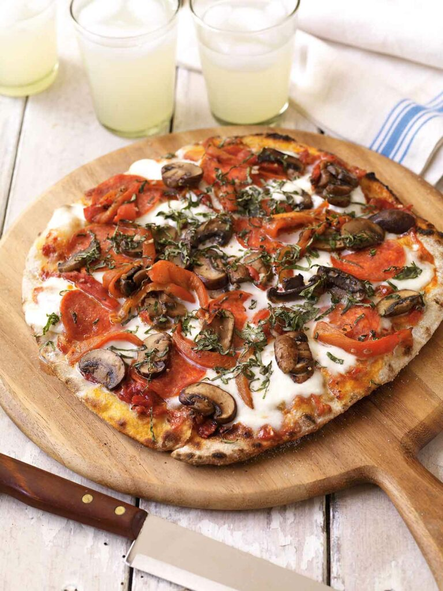

Pizza

Pizza is a savory dish of Italian origin consisting of a usually round, flattened base of leavened wheat-based dough topped with tomatoes, cheese, and often various other ingredients
(such as anchovies, mushrooms, onions, olives, pineapple, meat, etc.)br
which is then baked at a high temperature, traditionally in a wood-fired oven.
ingredients
- 1 cup warm water (105-115 degrees F)
- 1 teaspoon sugar
- 2 teaspoons active dry yeast
- 2 tablespoons olive oil, plus more for greasing the bowl
- 3 cups all-purpose flour, plus more for dusting the work surface
- 1 teaspoon salt
- 1 cup pizza sauce
- Your favorite toppings, such as shredded cheese, pepperoni, mushrooms, onions, peppers, etc.
how to make
- In a large bowl, combine the warm water, sugar, and yeast. Let stand for 5 minutes, or until the yeast is foamy.
- Stir in the olive oil, flour, and salt. Stir until the dough comes together.
- Turn the dough out onto a lightly floured work surface. Knead the dough for 5-7 minutes, or until it is smooth and elastic.
- Grease a large bowl with olive oil. Place the dough in the bowl and turn to coat in the oil. Cover the bowl with plastic wrap and let the dough rise in a warm place for 1 hour, or until doubled in size.
- Preheat the oven to 450 degrees F.
- Punch down the dough and roll it out on a lightly floured work surface to a 12-inch circle.
- Spread the pizza sauce over the dough. Top with your favorite toppings.
- Bake the pizza for 15-20 minutes, or until the crust is golden brown and the cheese is melted and bubbly.
home